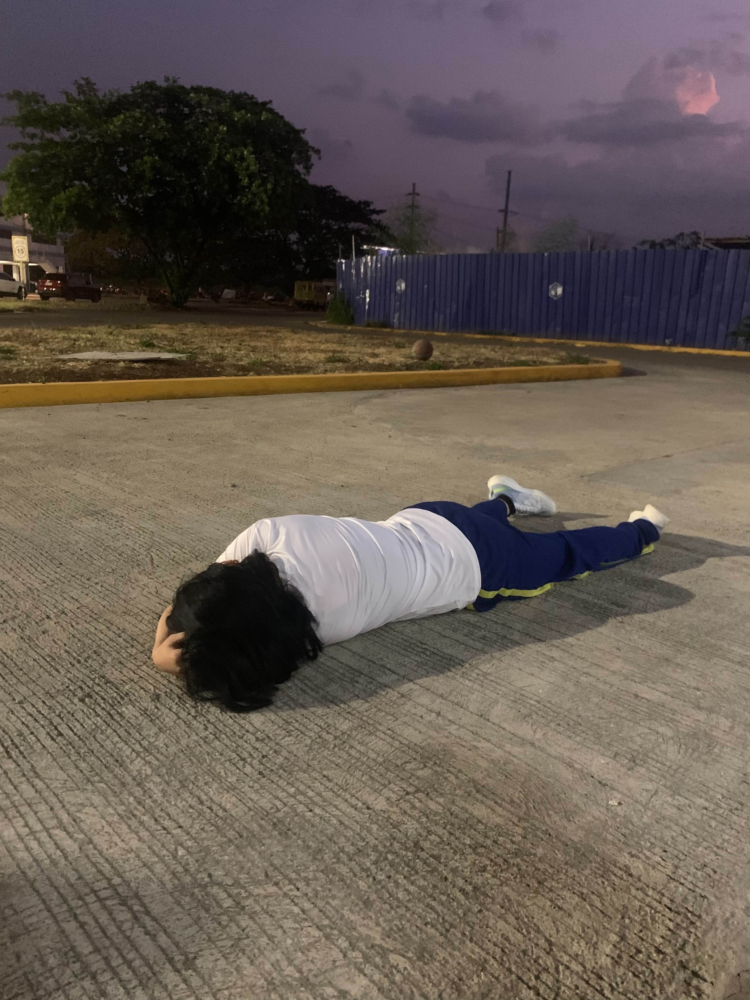
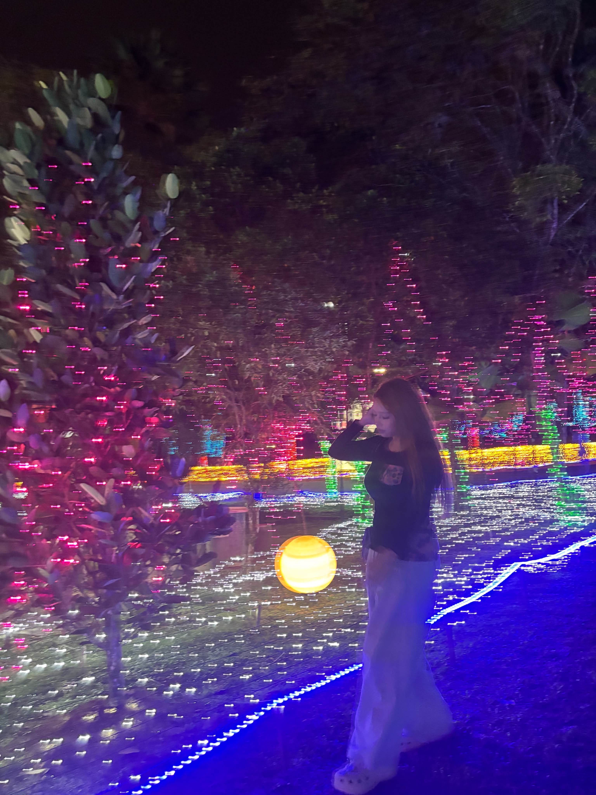
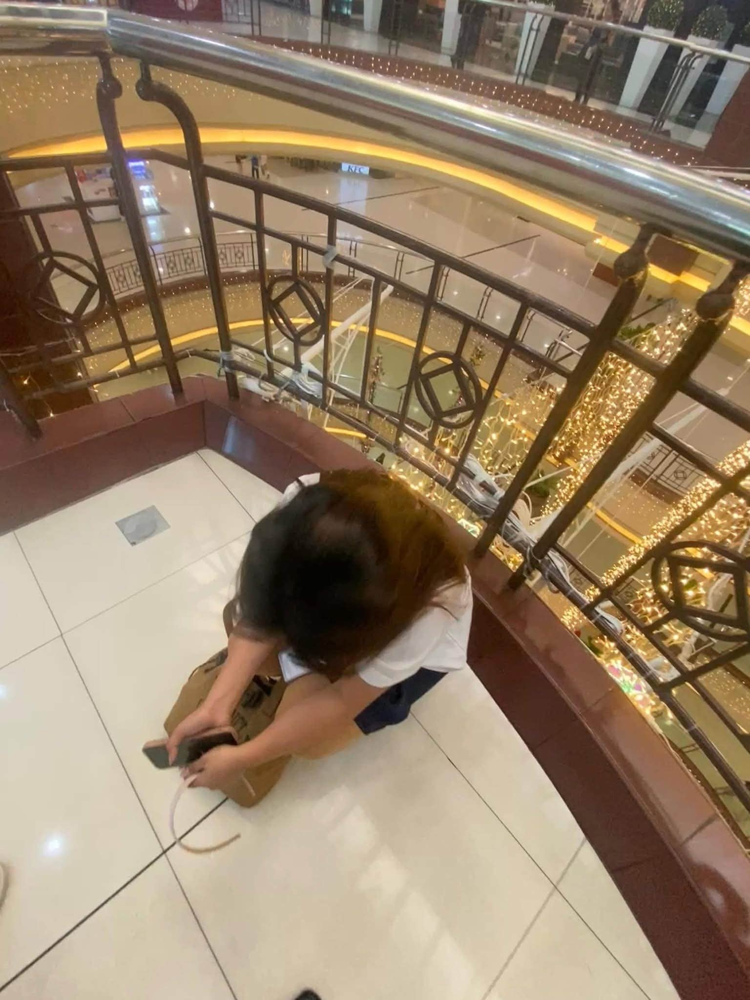

♡ About Me ♡
Hi! First things first, I love being alone. I prefer staying home rather than going out. Well, sometimes, I still go out with my friends.

Second is my love for fruits, mostly MANGOES and avocado. My favorite foods are pretty basic: mashed potatoes and fried chicken :b

If you're going to ask me about my IT program, I'm actually not really into programming.
But I started this back in Grade 11, and I just continued it. My father also wants me to finish this program. That's why I'm here!

♡ Fun Facts ♡
- I love every food that is white.
- My favorite colors are baby blue and red. The third one is green. Honorable mention: brown :D
- I don't like being seen. I love disappearing.